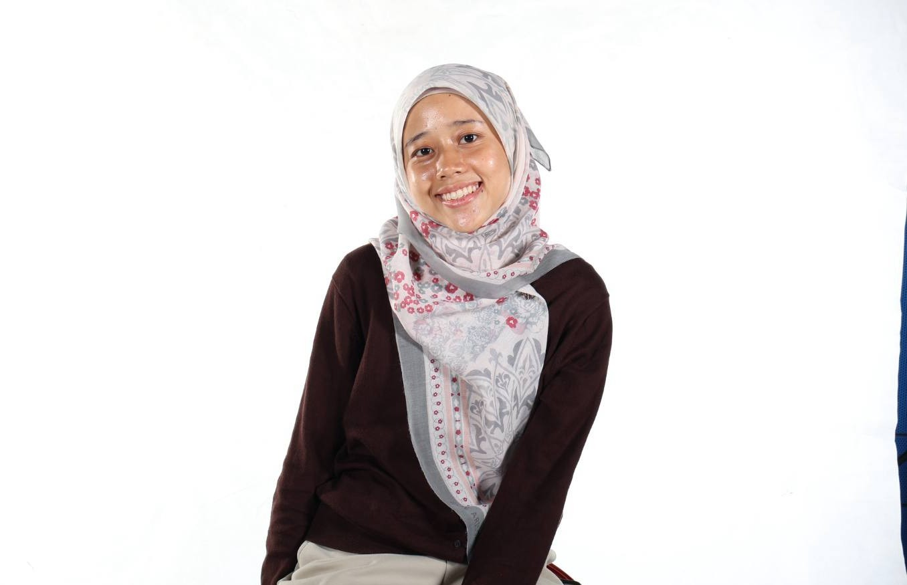

I'm Nurul Fatnin Haidah — a creative developer and media producer based in Kuala Lumpur, currently in my final year at Universiti Teknikal Malaysia Melaka (UTeM).
My degree in Computer Science (Interactive Media) has trained me across the full spectrum of digital media and technology — from building web systems and mobile apps to directing short films and developing games in Unity.
I love working at the intersection of creativity and technology, and I embrace AI tools as part of my workflow to prototype faster and push creative output further.
Outside of university, I serve as Vice President of the Motion Graphic Exhibition and do side jobs crew for live concerts and events.